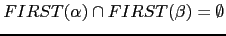
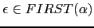
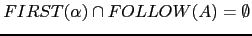
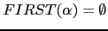
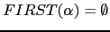
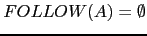
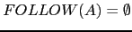

Sig: Ejercicio: Ambiguedad y LL(1)
Sup: Análisis Sintáctico Predictivo Recursivo
Ant: Gramáticas LL(1)
Err: Si hallas una errata ...
Ejercicio: Caracterización de una gramática LL(1)
Cuando se dice que una gramática es LL(1) si, y sólo si:
-

- Si

, entonces

se asume que los conjuntos
 no son vacíos.
no son vacíos.
- ¿Que se puede decir de la regla
 si

?
si

?
- ¿Que se puede decir de la variable
 si

?
si

?
Sig: Ejercicio: Ambiguedad y LL(1)
Sup: Análisis Sintáctico Predictivo Recursivo
Ant: Gramáticas LL(1)
Err: Si hallas una errata ...
Casiano Rodríguez León
2013-03-05